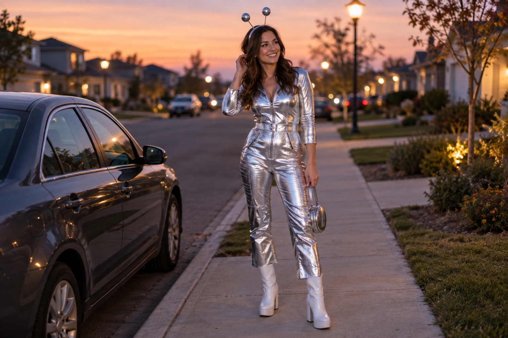

AFTER DARK / The details
Retro space traveler
Start with the metallic piece you would most enjoy wearing. Build around that, then add antennae or a headband if the look needs one final signal.
Build this look
Portfolio shopping guide: Etsy links are non-affiliate examples. No partnerships or commissions. AI-generated imagery illustrates styling, not the linked products.
Your three-piece outfit
- Choose a silver outfit or a metallic statement top.
- Add white or silver footwear you can move in.
- Finish with a small retro-space headpiece.
Make it your own
The trick is choosing a direction and staying with it. Think silver, white, and one playful accessory rather than every futuristic prop at once. If you are shopping from a marketplace, check whether the listing is for an adult garment, an accessory, or a sewing pattern. Your inspiration can be cinematic; your shopping list should be very specific.
The styling shortcut: keep the accessories in one color family so the outfit feels deliberate.